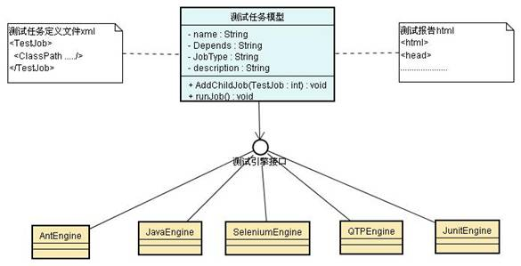
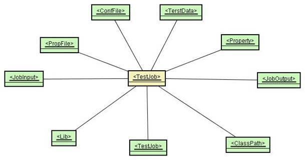

|
|
|
AC 总揽介绍
日期 作者 版本 版次 2010-08-02 Shining.liu 0.1 Initial draft 1. AC架构示意
AC以Test Job Object Model（测试任务模型）为核心，以Test Job File（测试任务文件）为输入，根据Job type启动不同类型的测试引擎，执行测试任务，最后输出一份基于html的自动化测试报告。如图：
AC目前支持五种主流测试引擎，Ant，Java，Selnium，QTP和Junit，这意味着，AC的用户可以将这些不同类型的测试脚本统一集成到AC中进行管理，调度和执行，最后形成一份自动化测试报告。
同时，JobEngine是基于Java的interface接口技术开发，因此，AC的用户也可以根据自己的需求对JobEngine进行扩展，开发不同Engine，比如RobotEngine，silkEngine等等。
2. Test Job Object Model（测试任务模型）
TestJobObject Model是AC的运行核心，它是一个树形结构，每个TestJob下包含多个属性和对象，结构图如下：
1) TestJob的模型构建
一个TestJob有如下属性信息：
- name：TestJob的名称。
- description：TestJob的描述信息。
- depends：TestJob的依赖信息。比如在TestJob A的depends定义为Test Job B，则AC会首先运行B，并根据B的成败，判断是否执行A。
一个TestJob还可以包含以下一个或多个附属对象：
- <JobInput>：测试任务输入信息，在本Test Job开始执行之时，AC会检查其所有JobInput是否已经准备好。
- <JobOutput>：测试任务输出信息，在本Test Job结束执行之后，AC会检查其所有的JobOutput 是否都已经按照定义输出。
- <PropFile>：环境文件，遵循Java Properties定义规范，和测试环境相关的信息，比如被测服务器地址，测试帐号及口令等等。
- <ConfFile>：AC配置文件，遵循java Proeprties定义规范，和任务设置相关的信息，比如测试超时时间，重复运行次数等等。
- <TestData>：测试数据，支持xsl和xml两种数据格式。AC会在Test Job执行的时候加载测试数据，供Test Case使用。
- <Lib>：QTP TestJob专用，AC在启动QTPjob时，会加载相应的lib文件。
- <ClassPath>： Java TestJob专用，AC在运行java job时，会调用classloader将所引用到的jar包装载至jvm中。
另外，TestJob同时还是一个递归的自定义结构，这意味着一个Test Job下可以递归包含若干个子Test Job，这种TestJob又称作抽象Job，AC在运行抽象Job时，会首先递归运行其下的所有子TestJob，然后分析这些TestJob的结果状态，最终确定抽象Job的运行结果状态。
2. TestJob文件示例
使用xml文件来定义TestJob，以下是一个TestJobFile.xml示例：
<TestJob name="机票预定系统测试" description="测试机票系统安装，登录，预定等功能" depends=""> <PropFile name="$ENV" location="serverInfo.xml"/> <ConfFile name="$CONFIG" location="config.xml"/> <Java name="getTestCaseFromCVS" description="使用java程序从cvs中获得相应的测试代码" depends="" driver_type="JAVA"> <ClassPath location="javacase/jar/cvsLoader.jar"/> <JobOutput name="$TESTVERSION"/> <Run path="cvsLoader.getFiles "> </Run> </Java> <Script name="VBS_Install_Client" description="使用VBScript脚本完成机票系统客户端的安装" depends="getTestCaseFromCVS" > <Lib location="common\lib\lib_install.vbs"/> <Run path="testcase\vbs\install_client.vbs"></Run> </Script> <QTP name="QTP_bookFlight" description="调用QTP脚本完成机票的预定" depends=" VBS_Install_Client" > <JobOutput name="$FlightNo"/> <JobOutput name="$CustomerName"/> <Lib location="common\lib\lib_utilityvbs"/> <Run path="testcase\qtp\qtp_bookFlight"></Run> </QTP> <Selenium name="Selenium_queryFlighOnWeb" description="调用Selenium脚本通过web查询订单的信息是否正确" depends="QTP_bookFlight" > <ClassPath location="seleniumcase/web/selcase.jar"/> <JobInput name="$FlightNo"/> <JobInput name="$CustomerName"/> <Run path="selcase.checkWeb"></Run> </Selenium> </TestJob>以上TestJob文件描述了一个机票系统的完整的自动化测试流程，总计包含4个不同类型的TestJob，分别为getTestCaseFromCVS，VBS_Install_Client，QTP_bookFlight和Selenium_queryFlighOnWeb。
TestJob的depends定义揭示了AC的运行过程：
- AC会首先运行名为getTestCaseFromCVS的java测试案例，getTestCaseFromCVS从代码管理系统cvs中下载测试案例代码到本地。为后续的案例运行准备好执行环境。
- VBS_Install_Client的Vbscript脚本负责在本机windows上安装订机票客户端。
- QTP脚本QTP_bookFlight下了一张机票订单，并将订单号和乘客名输出。
- 订单号和乘客名成为Selenium_queryFlighOnWeb的输入参数，Selenium脚本则完成web页面订单的查询和验证。